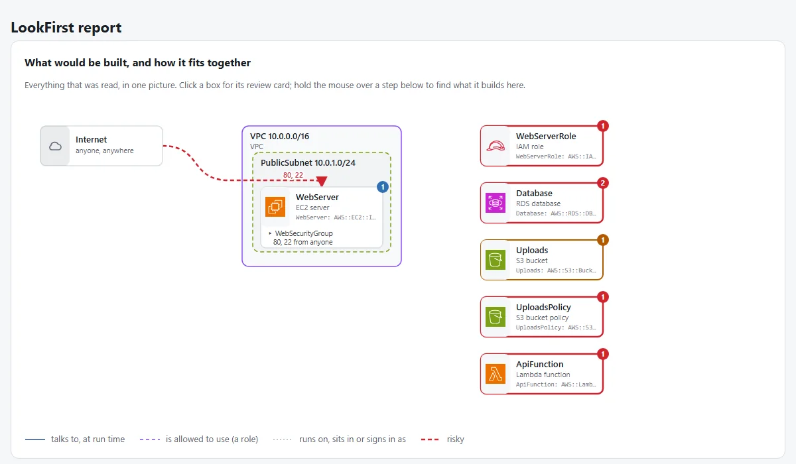

← Alla projektÖppen kod
01 / 06
LookFirst
Visar vad AI-skriven kod gör innan du kör den.
01 / 06
Visar vad AI-skriven kod gör innan du kör den.
Kod från en AI, ett forum eller en guide fungerar ofta, och gör ofta mer än man tror. Den kan öppna servern mot hela internet, skriva lösenord i filer, ladda ner och köra andra skript eller starta sig själv varje gång man loggar in.
LookFirst läser koden utan att köra den och visar vad den skulle bygga innan något händer.
